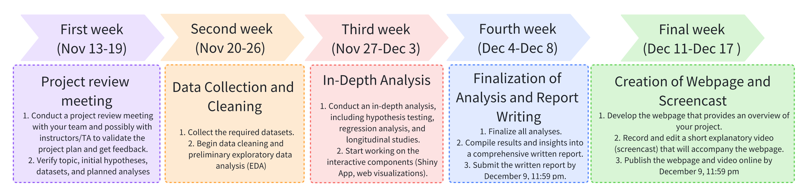

| Name | UNI | Contact |
|---|---|---|
| Pei Tian | pt2632 | pei.tian@columbia.edu |
| Mengxiao Luan | ml5018 | ml5018@cumc.columbia.edu |
| Sitian Zhou | sz3213 | sz3213@cumc.columbia.edu |
| Yuzhe Hu | yh3676 | yh3676@cumc.columbia.edu |
| Shuchen Dong | sd3731 | sd3731@cumc.columbia.edu |
What makes Billionaires?
Billionaires Unveiled: A Wealth Odyssey
Counting Billions: A Global Wealth Analysis
Billionaireomics: Decoding the World’s Richest
Quality control, format consistency maintenance for data usage
Select variables to reduce redundancy
Tidy key variables to ensure the feasibility of joining operation
Regarding general distribution:
What is the numeric distribution of billionaires of different states?
Regarding individual details:
What is the distribution of billionaires when divided by demographic information?
Regarding industry and economic development:
What is the potential relationship between billionaires and their business industries?
GDP-Temporal Wealth Patterns
Examine the rise and fall of billionaire wealth across different economic cycles, including booms, busts, and recoveries.
Industry-Lifecycles and Billionaire Wealth
Explore how technological disruptions in various sectors impact the net worth and ranking of billionaires over time.
Geo-Economic Shifts
Track shifts in the geographic distribution of billionaires over time and correlate these with changing economic powers and policies in different regions.
Analyze trends in wealth concentration in relation to global economic shifts, such as the rise of (Asia?) as an economic powerhouse.
Pandemic Response and Wealth Elasticity
Measure the elasticity of billionaire wealth in response to the COVID-19 pandemic.
Compare the wealth growth rates of billionaires in healthcare and technology before, during, and after the pandemic to those in more traditional industries.
Interactive visualization for top-ranked billionaires in different regions (countries, continents)
Interactive visualization for GDP of different countries in different years
Compare billionaire distribution in different regions (such as average wealth, gender composition)
Provide geographic visualization interface for other analysis results
Compare wealth between age groups: ANOVA (check assumptions, transformation may be applied)
Compare wealth between gender groups: T-test
Compare the proportion of female billionaires in 2013 and 2023: Two sample prop test
Compare the proportion of billionaires in a certain industry (eg. Tech) in 2013 and 2023: Two sample prop test
If result is significant, we could further look into the industry GDP dataset to explore the trend of that industry
When the topic of billionaires comes up, one can’t help but wonder what factors led them to become billionaires. Here, multiple linear regression will be adapted to analyse the problem. To be specific, the net worth of billionaires is going to be selected as the dependent variable, combining factors that may be related to it that can be quantified as the dependent variables, such as: the corresponding age of billionaires, gender, years of education, the total annual GDP of the country they belong to, the total tax rate of the country they belong to, and potentially other factors. Based on the linear regression results, we will adjust the factors accordingly, interpret the results in real context, and evaluate the usability of the model to fit the available data through evaluation criteria such as R-squared and AUC.
